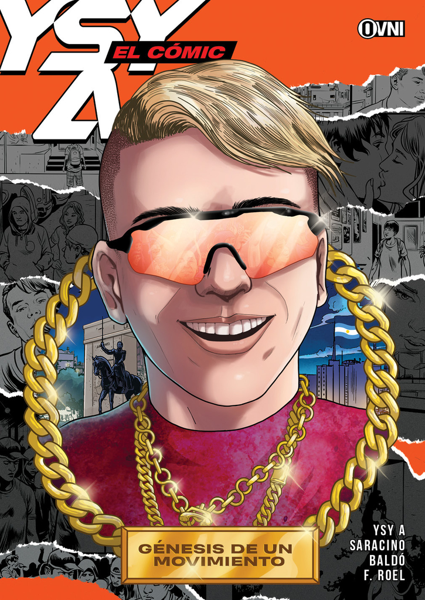

Discos y Empresa.
Discos
Ysy a desde que lanzo su primer disco Antezana 247 comenzo con una costumbre de una fecha en especial que le tiene mucho cariño que es el 11 de noviembre (11/11) esta fecha para el artista es muy especial ya que el 11 de noviembre de 2017 finalizo el quinto escalon. Los proximos años que vendrian publicaria albums todos los 11 de noviembre.
Cada disco aunque no parezca tiene una historia de por medio en la que el artista uso de inspiracion para realizarlos ahora vamos a ver cuales son la historia de sus 4 discos.
Antezana 24/7
Antezana 247 es un álbum conceptual que cuenta las experiencias que vivió Alejo, junto a Duki y Neo Pistea, en una localidad que alquilaron en Caballito, a la cual bautizaron como "La Mansión", durante la etapa que formaron el trío Modo Diablo. El 11/11/17, Ysy, Duki y unos cuantos productores del colectivo Neuen Arte, como Oniria, se mudan a una mansión situada en el barrio de Caballito, en la calle Antezana, el número 247. Mansión que sería el escenario de la muerte de la niñez de los artistas a manos de los excesos. Y esto último es algo que refleja la portada del disco, la tumba de Antezana rodeada de juguetes, porque el 11/11/18, cuando sale el disco, la mansión había muerto, pero su niñez con ella. El proyecto cuenta exactamente eso, su vida en la mansión durante ese año, desde que nace, hasta que muere, apoyando las historias de una forma muy original, con audios, grabaciones del día a día que dejaban constancia de lo que en esa casa algún día pasó.
| # | Cancion | Artista |
|---|---|---|
| 1 | Bienvenida | Ysy A |
| 2 | hidro | Ysy A |
| 3 | Vuelta a la luna | Ysy A Feat. Duki |
| 4 | El amanecer | Ysy A |
| 5 | Enamorada del diablo | Ysy A Feat. Neo Pistea |
| 6 | Linaje | Ysy A |
| 7 | Tragos Fuertes | Ysy A Feat. Obie Wanshot |
| 8 | Muevelo | Ysy A |
| 9 | No se | Ysy A Feat. Duki |
| 10 | Tamo Loco | Ysy A |
Hecho a mano
Hecho a Mano es el segundo álbum de estudio del rapero YSY A. Fue lanzado el 11 de noviembre de 2019, Con 11 canciones y 11 productores diferentes.
Luego de irse de la localidad que tenían alquilada en Caballito, conocida como la Mansión, junto a los otros integrantes, Duki y Neo Pistea, YSY A buscó renovarse musicalmente, y por lo tanto dejó de lado su proyecto con Modo Diablo. Se mudó a un isla del Tigre, donde vivió por dos semanas, donde buscó inspiraciones de artistas que rompieron esquemas, con álbumes icónicos de la música popular argentina, como Bocanada de Gustavo Cerati, Almendra I, Desatormentándonos de Pescado Rabioso, y María de Buenos Aires de Astor Piazzolla.
Hecho a Mano fue anunciado el 1 de noviembre de 2019 en el documental del Modo Demoledor Tour, una gira que Ysy A hizo por Argentina, Uruguay, México y Chile entre junio y julio de 2019. En el documental, Acosta cuenta en una entrevista que había estado grabando en los estudios de los mejores productores de Argentina, y que un amigo le hizo darse cuenta de que tenía que componer un disco con esas canciones. La portada del álbum es una remera estampada por el propio Acosta, que repartió durante esa gira, y de ahí sacó el concepto del título.
| # | Cancion | Productor |
|---|---|---|
| 1 | Desfilar mis penas | Asan |
| 2 | Bardos y verdades | Bles |
| 3 | Como tiene que ser | Halpe |
| 4 | Calor | Clubhats |
| 5 | Full Ice | Orodembow |
| 6 | Negociando por tiempo | Shigant G |
| 7 | Buenos Aires es amor | Yesan |
| 8 | Donde las luces | Oniria |
| 9 | Tantas Tentaciones | Rulits Tmb |
| 10 | Alma | 0600 |
| 11 | Para sacarmelo | Omar Varela |
Mordiendo el bozal
Mordiendo el Bozal es un disco en el que YSY A relata un romance desde su génesis hasta la ruptura y su correspondiente angustia y desazón. Las 6 canciones del álbum funcionan como 6 capítulos de una novela.
Igualmente esta historia la cuenta el mismo artista en un stream por twitch contando la inspiracion que busco para poder realizar este album.
| # | Cancion | Productor |
|---|---|---|
| 1 | La Primera vez | Yesan & Club Hats |
| 2 | Sacarte To | Yesan & Club Hats |
| 3 | Tarde | Yesan & Club Hats |
| 4 | Sobre el agua | Yesan & Club Hats |
| 5 | Perdamono | Yesan & Club Hats |
| 6 | Mordiendo el bozal | Yesan & Club Hats |
Trap de verdad
Es el disco de todos que tiene mas canciones con una duracion de 1 hora a diferencia de los demas este disco estuvo planeado a ultimo momento ya que ysy se enfoco mas en la empresa SPONSOR DIOS y no tenia el plan de sacar otro album en la fecha 11/11 pero luego segun cuenta el y se puede ver que le dedico una cancion le llega una "inspiracion divina" que hace que ysy se encierre en el estudio para grabar nuevos temas para el album.
El 11 de noviembre de 2021, Alejo, lanzó su tercer álbum de estudio, Trap de Verdad, el cual contiene el sencillo previamente estrenado «Oro y Platino». También el álbum contó con colaboraciones de artistas como Neutro Shorty, Alemán, Pablo Chill-E, Akapellah, entre otros. También Billboard Argentina lo seleccionó como el álbum de la semana.
| # | Cancion | Artista |
|---|---|---|
| 1 | Trap de verdad | Ysy A |
| 2 | Oro y Platino | Ysy A |
| 3 | Inolvidable | Ysy A Feat. Pablo Chill-E y Aleman |
| 4 | Sea la hora que sea | Ysy A |
| 5 | De casa en casa | Ysy A Feat. Bhavi |
| 6 | Trap on the rocks | Ysy A |
| 7 | Todo automatico | Ysy A Feat. Akapellah y Neutro Shorty |
| 8 | inspiracion divina | Ysy A |
| 9 | No hook | Ysy A Feat. Sixto Yegros y Hit Boy |
| 10 | En el infierno no los vi | Ysy A Feat. El Doctor |
| 11 | Que desvelo | Ysy A |
SPONSOR DIOS.
Sponsor dios es un sello discografico creado por ysy a tambien usa ese mismo nombre para su marca de ropa fue fundado en 2020 y lo dio a conocer mediante una cancion llamada "Meteoritos vs Dinosaurios"
Meteoritos vs Dinosaurios
Tambien como fue mencionado anteriormente tiene una empresa de ropa en la cual tiene su pagina web para poder comprar su merchandising.

Artista,empresario y un emblema para el trap nacional
Ysy A actualmente es una persona mas importantes para el trap Argentino no solo eso sino que tiene una mente muy abierta ya que no solo se dedica a la musica sino que tambien maneja varias empresas e incluso saco un comic contando su album.
